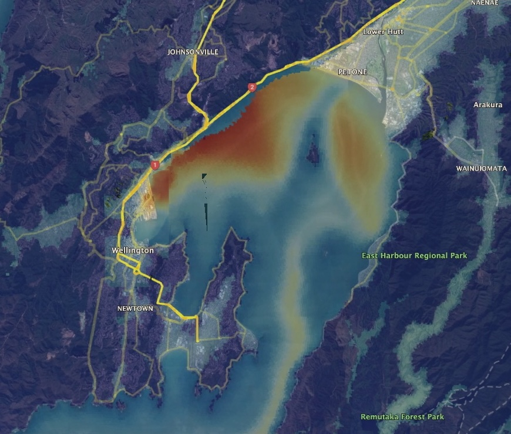
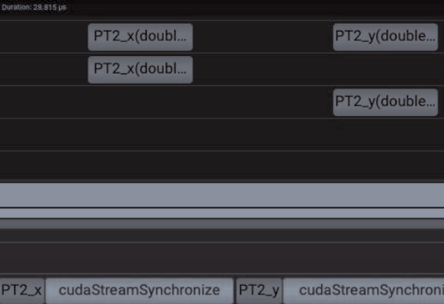

KPFF Consulting Engineers
January 2025 — June 2025

As part of UC Irvine's senior capstone program, I led a team of six students on a multi-quarter project for KPFF Consulting Engineers, a global structural engineering firm specializing in building and infrastructure design. Our project, VISTA — Visualization Tools for Structural Analysis — was a full-stack visualization tool built from the ground up using Godot Engine and GDScript, handling backend OpenSees TCL script processing and frontend 3D visualization of structural engineering models and post-processing results.
The project began with a thorough research phase in which I evaluated industry-standard structural engineering software — including RISA-3D, ETABS, and Perform3D — to identify gaps in usability and analysis capability that VISTA could address. From there, I developed the technical roadmap and onboarding plan that guided the team through the full development lifecycle, from prototyping through final deployment, in under six months.
I led all client-facing communication throughout the project. This included weekly remote check-ins, monthly in-person meetings with KPFF engineers, and two formal mid-project presentations required for course evaluation. I led every meeting with the KPFF team, wrote all progress summaries, and compiled teammate notes into structured action items and goals for the following week. At the conclusion of the project, I led our final company-wide presentation to KPFF stakeholders.
In addition to project leadership, I contributed directly to frontend design and testing, owned version control and code review for the entire team via Git, managed sprint organization and task tracking in Jira, and produced all technical documentation. I also led and structured our ICS Project Expo presentation, which earned our team 3rd place at the UC Irvine ICS Project Expo — a result I'm particularly proud of given that the capstone was entirely optional for CS majors.
View Expo Poster Watch VISTA Demo Watch 2025 ICS Expo GitHub (Private Repo)NASA Center for Climate Simulation
Summer 2024

During the summer of 2024, I worked as a High-Performance Computing Intern at NASA's Center for Climate Simulation at Goddard Space Flight Center in Greenbelt, Maryland. My work focused on investigating MPI and I/O performance anomalies for the GEOS climate model across multiple production supercomputing clusters — NCCS Discover at Goddard and NAS Aitken at Ames — as well as AWS and Azure cloud environments managed with Spack.
I conducted benchmarking in two parts: OSU micro-benchmarks on AMD Milan architecture across various platforms, and I/O benchmarking on the NCCS Discover cluster comparing DNB09 and DTSE01 file systems to assess their impact on large-scale climate simulations. I also implemented and tested various MPI tuning configurations, including OFI and GMAO-specific settings, to evaluate communication efficiency and overall system performance.
Along the way I addressed real-world systems challenges — transitioning Bash scripts from Slurm to PBS and customizing Spack module environments for cloud deployments. My findings directly contributed to advancing the performance of climate simulations running on NASA's supercomputing infrastructure.
GitHub ReportACCESS
July 2023 — June 2024



During my time with ACCESS, I worked as a Computational Research Intern through the ACCESS MATCH Program, remotely from Orange County, California. My work focused on optimizing GPU-accelerated ice-sheet flow modeling software using NVIDIA Nsight Systems, Compute, and NVTX annotations to profile and analyze performance bottlenecks within CUDA kernels. Through targeted optimizations — removing redundancies, establishing kernel concurrency, and eliminating expensive operations — I reduced overall runtime by approximately 10%.
I utilized two Slurm-managed supercomputing clusters, Delta at the National Center for Supercomputing Applications and Jetstream2 at the Pervasive Technology Institute, to compare runtime, grid points, scale, and error values between test cases. I also began a codebase conversion toward a performance-portable, architecture-agnostic implementation using OpenACC. My research findings contributed to narrowing uncertainty in sea level rise prediction to better understand the effects of climate change.
Note: The performance-portable branch I developed remains active and is maintained in a private fork of the public repository, with software development ongoing.
GitHub (Public Repo)Statewide California Earthquake Center
May 2022 — February 2023

At SCEC, I worked as a Computational Research Intern through the SCEC SOURCES Program. Working one-on-one with my research mentor Dr. John Louie, Professor of Geophysics at the University of Nevada, Reno, I developed and ran low-frequency, physics-based 3D seismic wave propagation models using SW4 software for the Wellington, New Zealand region — the highest-resolution simulations ever performed for the area.
My work aimed to determine whether newly developed gravity-based basin thickness estimates by Stronach and Stern produced a substantial difference in how seismic waves travel through Wellington's sedimentary basin compared to older geological models. I managed all computational workflows on the Rockfish supercomputing cluster at Johns Hopkins University using Slurm, and developed Bash scripts to automate model builds and job submissions. My research demonstrated basin amplifications of 2-3x and showed that basin trapped waves extend shaking duration by at least five seconds — results with direct relevance to disaster preparedness in a major seismically active city.
In January 2023, SCEC sponsored my travel to Wellington, New Zealand to visit our research collaborators. I spent one week with Dr. Tim Stern, Professor of Geophysics at Victoria University of Wellington, and Dr. Aasha Pancha, Geophysical Ground Investigation Manager at Aurecon. During my visit, I presented a research seminar to graduate students and faculty at Victoria University of Wellington and had the opportunity to meet with researchers at the GNS Science Institute, where I shared my findings and had in-depth conversations about ongoing seismology research in the region.
This work has been published four times, most recently in March 2026 as a co-author on "Subsurface Expression of the Lambton Fault and Potential for the Basin Edge Effect in the Wellington Central Business District," published in the New Zealand Journal of Geology and Geophysics.
For a full overview, please refer to Publications.
GitHub Publications